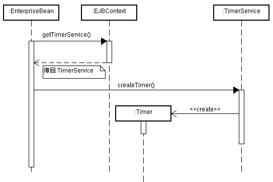

|
|
EJB
容器提供Timer服務，可適用於Stateless Session Bean、Message-Driven
Bean，您可以取得Timer服務物件建立Timer，並於Bean上提供Timeout回呼，當指定的時間或間隔到時，就會呼叫Timeout回呼方
法。 您可以從EJB容器的Timer服務建立的Timer主要有Single-action Timer與Interval Timer，前者為一次Timeout事件通知，後者會持續間隔的Timeout事件通知。Single-action Timer與Interval Timer首次啟動時間各有兩種方式：絕對時間與相對時間。 所以共計會有四種類型的Timer：
您可以指定一個絕
對時間，當該時間到達,（expiration）時，會呼叫Timeout回呼方法一次，這可以呼叫TimerService的以下方法來
建立該Timer：
您可以指定一個相
對於Timer建立的時間，當相對時間（duration）到達時，會呼叫Timeout回呼方法一次，這
可以呼叫TimerService的以下方法來建立該Timer：
您可以指定一個開
始的絕對時間（initialExpiration），當該時間到達時，會呼叫Timeout回呼方法，之後每間隔一段指定的時間
（intervalDuration）就會呼叫Timeout回呼方法，這可以呼叫
TimerService的以下方法來建立該Timer：
您可以指定一個相
對於Timer建立的時間（initialDuration），當相對時間到達時，呼叫
Timeout回呼方法，之後每間隔一段指定的時間（intervalDuration）就會呼叫Timeout回呼方法，這
可以呼叫TimerService的以下方法來建立該Timer：
以上四個createTimer()最後一個Serializable參數，可以設定給Timer物件， Timeout回呼方法中必須接受Timer物件作為引數，您可以由其getInfo()方法取得傳入的Serializable物件，當多個Timer與Bean關聯時，必須辨識Timer事件是來自於哪個Timer，也可以藉由這個傳入的Serializable物件辨識。 Timer在伺服器關機之後收被永續保存，伺服器開機後重新發送事件，通知所有逾期的Timer，對於持續間隔通知型的Timer，可能只會收到一次通知。 您可以利用容器為您注入TimerService，或是使用EJBContext來取得TimerService，之後再使用TimerService建 立Timer物件，下圖為使用TimerService與建立Timer的UML順序圖：  |